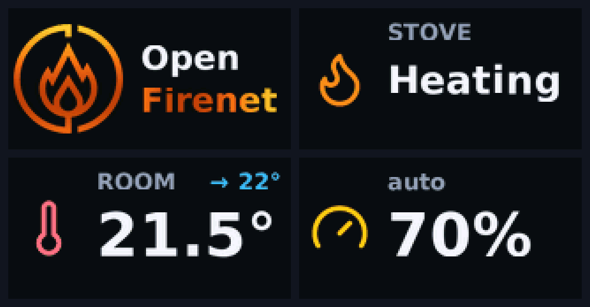
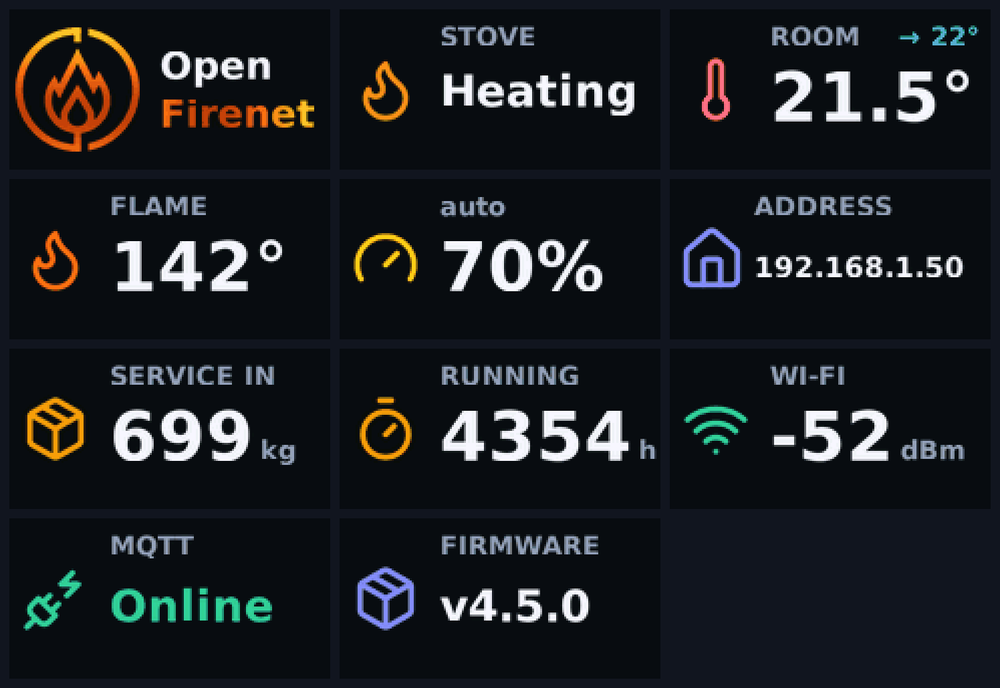
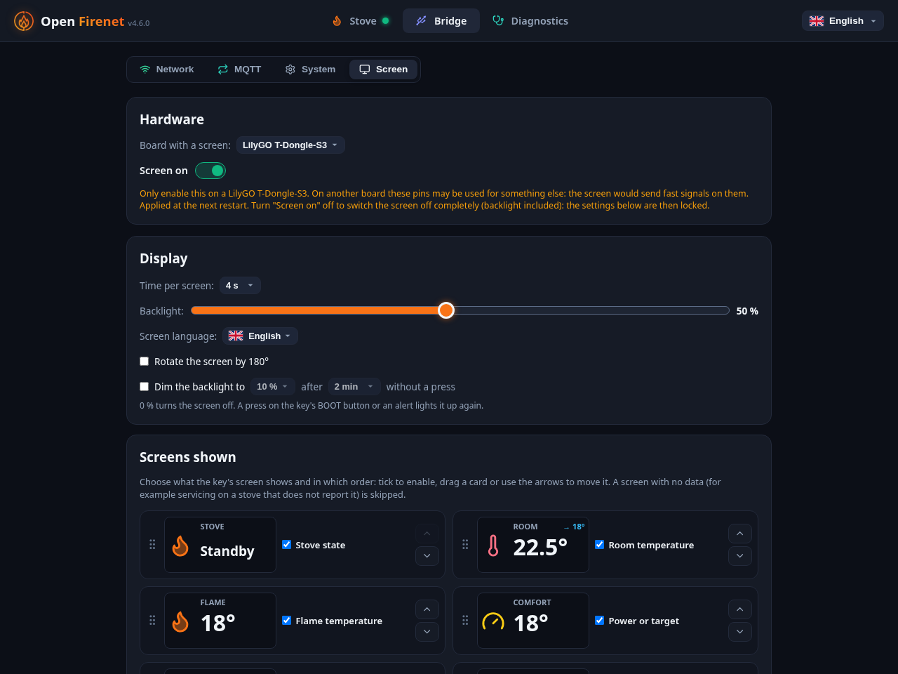

The screen of the LilyGO T-Dongle-S3
The LilyGO T-Dongle-S3 has a small colour screen. With Open Firenet 4.5 it shows what the stove is doing, at a glance, without opening the page.

What it shows
An animated logo at start, then one value per screen, one after the other: the stove state, the room temperature with its target, the flame temperature, the heating power (or the comfort target), the bridge's address, the pellets left until service, the running hours, the Wi-Fi signal, the MQTT connection and the firmware version. A screen with nothing to tell (for example the hours on a stove that does not report them) is skipped.
An alert takes the screen over until it is gone: a stove error, the hopper lid open, the stove no longer answering, or the Wi-Fi lost.

Switch it on
The screen is off by default: other boards may have something else wired to the pins it uses, and driving them could disturb it. Only switch it on with a LilyGO T-Dongle-S3.
- Open the bridge's page, then Bridge and the Screen tab.
- Choose LilyGO T-Dongle-S3 as the board with a screen, and confirm (you are asked twice).
- Restart the bridge when the page offers it. The screen starts with the logo.
The Screen on switch turns the screen and its backlight off completely, while keeping your settings.
Set it up

- Screens shown: tick the ones you want, and drag them (or use the arrows) to set their order.
- Time per screen: from 2 to 30 seconds.
- Backlight: from 5 to 100 %.
- Screen language: English, French, Italian or German. The first time, the screen takes the language of the page.
- Rotate the screen by 180°: for when the stick sits the other way round.
- Dim after inactivity: lower the backlight to a chosen level (0 to 50 %) after a delay (30 seconds to 1 hour) without a press. At 0 % the screen is dark.
- BOOT button of the stick: lights the screen up again when it is dimmed, and moves to the next screen when it is lit. An alert, or a change of state of the stove (it starts, it stops...), also lights it up.
Changes are kept until you press Apply, and are stored in the stick, so they survive a restart.
Good to know
- In our test the screen made the stick draw too much current when it started, and the stove restarted when the stick was plugged straight in. A USB extension cable solved it.
- Open Firenet does not drive the screens of other boards.
Questions or a problem with the screen: open an issue.